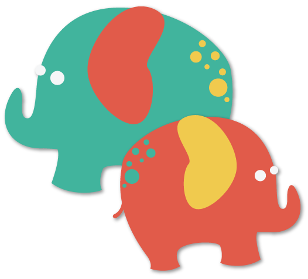

CSS Zen Garden
Responsive • Illustrations • CSS Animation • Responsive
Mainly a proof of concept project, as well as a huge learning experience, CSS Zen Garden was a started to show people how vastly different a website could look using only CSS while keeping the HTML untouched. I chose to go with a circus theme due to CSS Zen Garden’s plea for non-flower-centric designs. Though still incomplete, you can view my current progress below.
